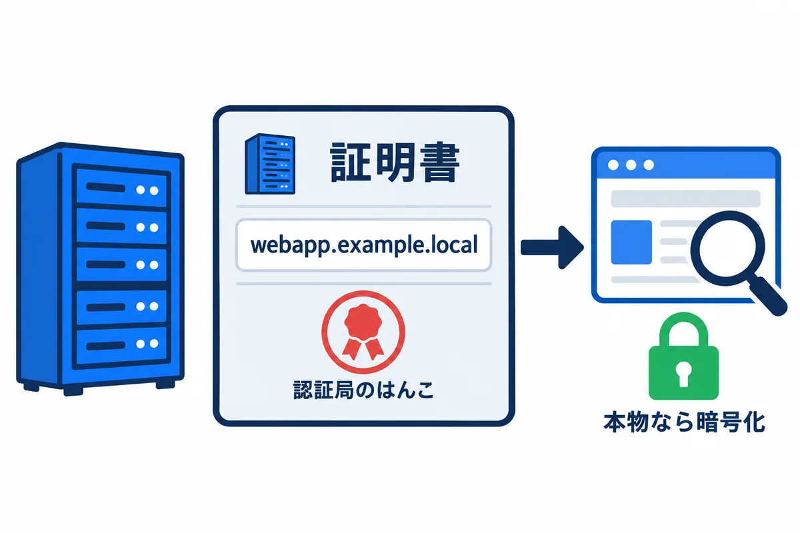
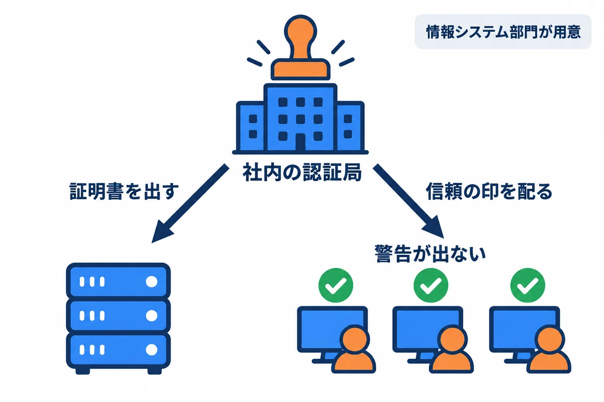
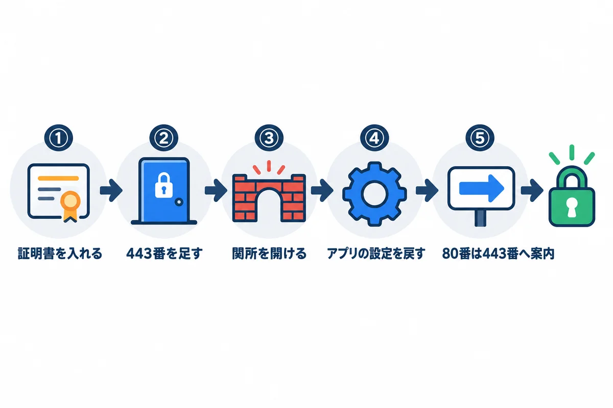

色の付いた枠のコードの、右上の「コピー」ボタンを押してください。コピーしたら、ブラウザーの「戻る」で PDF に戻れます。
今回の会社の環境では、社内で HTTPS を使えないため、本編（04・05）は HTTP（80 番）で書いています。この資料は、将来、証明書を用意できるようになったときに、HTTPS に切りかえるための参考です。

HTTPS は、2 つのことをします。
webapp.example.local）が書かれた証明書を見せます。ブラウザは、その証明書に押された認証局のはんこ（電子署名）が、自分の信じているはんこかを確かめます。| 証明書に書かれていること | 意味 | 合わないと |
|---|---|---|
| 名前（サブジェクトの別名。SAN） | この証明書が使える名前（webapp.example.local など） |
ブラウザに「名前が違う」という警告 |
| 有効期限 | 使ってよい期間（今は長くて 1 年ほど。だんだん短くなっている） | ブラウザに「期限切れ」という警告。全員が使えなくなる |
| 発行者（認証局） | はんこを押した所 | ブラウザが信じていない所なら、「信頼されていない」という警告 |
用語: 証明書（サーバー証明書：サーバーの名前と、暗号に使う鍵の片方を、認証局が「本物です」とはんこを押して証明した電子の身分証）
用語: 認証局（CA。シーエー：証明書にはんこを押す所。ブラウザや Windows は、信じてよい認証局の一覧を持っている）
用語: 秘密鍵（証明書と組になる、サーバーだけが持つ鍵。これが漏れると、ほかの人がサーバーになりすませる。証明書の
.pfxファイルに一緒に入っていることが多く、パスワードで守る）

| 方法 | 仕組み | 長所 | 短所 | 向き・不向き |
|---|---|---|---|---|
| 社内の認証局（Active Directory 証明書サービスなど） | 情報システム部門が、会社の中の認証局で証明書を出す。社員のパソコンには、会社の認証局を信じる設定が自動で配られる | webapp.example.local のような社内だけの名前でも出せる。費用がかからない |
会社に認証局が無ければ、情報システム部門が作る必要がある | 社内向けのアプリに最も向く |
| 公的な認証局 | インターネットの認証局から証明書を取る | どのパソコンでも、何もしなくても信じられる | .local のような社内だけの名前には出してもらえない。会社が持っている本物のドメイン（例：webapp.example.com）の名前にし、DNS を社内と社外で合わせる必要がある |
会社の本物のドメインを社内でも使っている場合 |
| 自己署名（自分ではんこを押す） | サーバーが自分で証明書を作る | すぐ作れる | どのパソコンでも「信頼されていない」と警告が出る。社員が警告を無視する癖が付き、かえって危ない | 使わない |
情報システム部門に頼むこと（例）:
webapp.example.local・webapp-stg.example.local）の両方が入った証明書（または 1 つずつ）。.pfx ファイルと、そのパスワード（パスワードは、ファイルとは別の方法で受け取る）。
| 手順 | すること | 章 |
|---|---|---|
| ① | 証明書をサーバーに入れる | 4 |
| ② | IIS のサイトに、443 番のバインドを足す | 5 |
| ③ | ファイアウォールで、社内からの 443 番を通す | 6 |
| ④ | アプリの設定を、HTTPS 用に戻す | 7（Rust）・8（Django） |
| ⑤ | 80 番で来たお願いを、443 番へ案内する | 9 |
順番が大事です。 ①〜③ の間は、HTTP のまま使えます。④ と ⑤ は、同じ時間にまとめて切りかえます（④ だけ先にすると、HTTP でログインできなくなる）。必ず検証のサイトで先に行います。
# .pfx のパスワードを、画面に出さずに入れる
$pw = Read-Host ".pfx のパスワード" -AsSecureString
# コンピューターの「個人」の証明書の置き場に入れる
Import-PfxCertificate -FilePath D:\webapp\secrets\webapp.pfx `
-CertStoreLocation Cert:\LocalMachine\My -Password $pw
# 入った証明書の、名前・期限・指紋（Thumbprint）を見る
Get-ChildItem Cert:\LocalMachine\My |
Select-Object Subject, @{ Name = "Names"; Expression = { $_.DnsNameList.Unicode -join "," } }, NotAfter, Thumbprint
▶ ここで初めて出てくるコード
Read-Host（PowerShell）: キーボードから 1 行入力してもらうコマンド。Read-Host "説明"で、説明を出して待ちます。Read-Host -AsSecureString（PowerShell）: 入力した文字を画面に出さず、暗号化した形（SecureString）で受け取るオプション。パスワードを入れてもらう時に使い、コマンドの履歴にも残りません。Import-PfxCertificate（PowerShell）: 証明書と秘密鍵の入った.pfxのファイルを、Windows の証明書の置き場に入れるコマンド。Import-PfxCertificate -FilePath（PowerShell）: 入れる.pfxのファイルの場所を決めるオプション。Import-PfxCertificate -CertStoreLocation（PowerShell）: 入れる先の証明書の置き場を決めるオプション。Cert:\LocalMachine\Myは、このパソコン全体の「個人」の置き場（IIS はここから使う）。Import-PfxCertificate -Password（PowerShell）:.pfxのパスワード（Read-Host -AsSecureStringで受け取った物）を渡すオプション。
確かめること: Names に、本番と検証の名前が入っていること。NotAfter（期限）が先の日付であること。
.pfx のファイルは、サーバーに残さず、会社の決まりに従って保管します（秘密鍵が入っているため）。用語: Thumbprint（サムプリント：証明書の指紋。IIS に「どの証明書を使うか」を教えるのに使う）
Import-Module IISAdministration
# 本番の名前の証明書を探す（期限のいちばん先の物）
$cert = Get-ChildItem Cert:\LocalMachine\My |
Where-Object { $_.DnsNameList.Unicode -contains "webapp.example.local" } |
Sort-Object NotAfter -Descending | Select-Object -First 1
# 本番のサイトに、443 番・名前つき（SNI）のバインドを足す
New-IISSiteBinding -Name "webapp-prod" -BindingInformation "*:443:webapp.example.local" `
-Protocol https -CertificateThumbPrint $cert.Thumbprint -CertStoreLocation "Cert:\LocalMachine\My" -SslFlag "Sni"
Get-IISSiteBinding -Name "webapp-prod"
▶ ここで初めて出てくるコード
-contains（PowerShell）: 左の並びの中に、右の値があるかの比べ方（-inと左右が逆）。$names -contains "webapp.example.local"は「その名前が含まれているか」。New-IISSiteBinding（PowerShell）: IIS のサイトに、受け取る住所・ポート・名前（バインド）を足すコマンド。New-IISSiteBinding -Name（PowerShell）: バインドを足すサイトの名前を決めるオプション。New-IISSiteBinding -BindingInformation（PowerShell）: 足すバインドを決めるオプション。"*:443:webapp.example.local"は「どの住所でも・443 番（HTTPS）で・その名前の物」。New-IISSiteBinding -Protocol（PowerShell）: 通信の種類を決めるオプション。httpsにします。New-IISSiteBinding -CertificateThumbPrint（PowerShell）: 使う証明書を、その指紋（Thumbprint。証明書ごとに違う番号）で決めるオプション。New-IISSiteBinding -CertStoreLocation（PowerShell）: 証明書の置き場を決めるオプション。New-IISSiteBinding -SslFlag（PowerShell）: HTTPS の細かい決まりを決めるオプション。Sniは「名前を見て、使う証明書を選ぶ」（同じ 443 番で、いくつもの名前を受け取れる）。Get-IISSiteBinding（PowerShell）: IIS のサイトのバインド（受け取る住所・ポート・名前）の一覧を表示するコマンド。Get-IISSiteBinding -Name（PowerShell）: 調べるサイトの名前を決めるオプション。
検証も、名前とサイトを変えて同じことをします。
確かめること: Get-IISSiteBinding に、http *:80:webapp.example.local と https *:443:webapp.example.local の 2 つが出ること。
用語: SNI（エスエヌアイ：1 つの IP アドレスと 443 番で、名前ごとに別の証明書を使い分ける仕組み。本番と検証を同じ 443 番に置くのに使う）
New-NetFirewallRule -DisplayName "webapp HTTPS 443 (社内から)" `
-Direction Inbound -Protocol TCP -LocalPort 443 `
-RemoteAddress 10.0.0.0/8 -Profile Domain -Action Allow
-RemoteAddress は、04 の 9.2 で 80 番に使った社内の範囲と同じにします。ネットワークの関所（情報システム部門）でも 443 番を通してもらいます。
この時点で、社員のパソコンから https://webapp-stg.example.local/ を開くと、鍵のマークが出て画面が出ます（まだログインは HTTP 用の設定なので、④ をするまで試すのは表示だけにします）。
04 の 6.4 で作った「HTTP 用のクッキーの置き場」（HttpCookieTokenStore）をやめ、Topcoat の決まりの設定に戻します。
// 変更前（HTTP 用。04 の 6.4）
.sessions(
SessionConfig::builder()
.token_store(crate::http_cookie::HttpCookieTokenStore)
.lifetime(std::time::Duration::from_secs(60 * 60))
.build(),
)
// 変更後（HTTPS 用）: 決まりのクッキー（__Host- が付き、Secure が付く）に戻す。期限の 60 分は残す
.sessions(
SessionConfig::builder()
.lifetime(std::time::Duration::from_secs(60 * 60))
.build(),
)
__Host- が付き、Secure（HTTPS のときだけ送る）が付きます。HTTPS なら、ブラウザが受け取ります。session のクッキーは使われなくなるので、全員が一度ログインし直しになります。社員に知らせておきます。Sec-Fetch-Site を送るので、Topcoat の送り元の確かめ（04 の 8.3）が、より確かになります。preserveHostHeader=true は、そのままにしておきます。# HTTPS にしたら
SESSION_COOKIE_SECURE = True
CSRF_COOKIE_SECURE = True
CSRF_TRUSTED_ORIGINS = [f"https://{host}" for host in ALLOWED_HOSTS]
# HTTP のときに黙らせていた注意を、また出す（SILENCED_SYSTEM_CHECKS の行を消す）
# SILENCED_SYSTEM_CHECKS = [...]
IIS からアプリへは、サーバーの中の HTTP（127.0.0.1:8080）のままです。そこで、IIS が「元は HTTPS だった」という付け札（X-Forwarded-Proto: https）を付け（9 章）、waitress がそれを信じるようにします。05 の 9.2 の XML の arguments を、次のように変えます。
<arguments>-m waitress --listen=127.0.0.1:8081 --threads=8 --trusted-proxy=127.0.0.1 "--trusted-proxy-headers=x-forwarded-for x-forwarded-proto" config.wsgi:application</arguments>
試して確かめた結果（Django 5.2.18・waitress 3.0.2。--trusted-proxy-headers に x-forwarded-proto を足した状態）:
| 試したこと | 結果 |
|---|---|
Origin: https://... でログインを送る。X-Forwarded-Proto 無し |
403（Django は HTTP で来たと思い、送り元が食い違う） |
同じく、X-Forwarded-Proto: https を付ける |
200（ログインできる） |
ログイン後、X-Forwarded-Proto: https を付けて request.is_secure() を見る |
True |
| 付けないとき | False |
つまり、IIS が付け札を付けること（9 章）と、waitress がそれを信じること（この章）の、両方が要ります。
# 変えたら、注意が HTTPS 関係も含めて出ないか確かめる
cd D:\webapp\stg\service
.\manage.ps1 check --deploy
確かめること: security.W012・W016（クッキーの Secure）が出なくなること。W004（HSTS）・W008（HTTPS への転送）は、Django ではなく IIS で受け持つので、出たままでかまいません（10 章）。
web.config（04 の 8.5）のルールを、次のようにします。
<?xml version="1.0" encoding="UTF-8"?>
<configuration>
<system.webServer>
<rewrite>
<rules>
<!-- 1. HTTP で来たら、同じ名前・同じ道の HTTPS へ案内する -->
<rule name="http-to-https" stopProcessing="true">
<match url="(.*)" />
<conditions>
<add input="{HTTPS}" pattern="off" />
</conditions>
<action type="Redirect" url="https://{HTTP_HOST}/{R:1}" redirectType="Found" />
</rule>
<!-- 2. HTTPS で来たお願いを、「元は HTTPS」の付け札を付けて、アプリへ取り次ぐ -->
<rule name="to-webapp-prod" stopProcessing="true">
<match url="(.*)" />
<serverVariables>
<set name="HTTP_X_FORWARDED_PROTO" value="https" />
</serverVariables>
<action type="Rewrite" url="http://127.0.0.1:8080/{R:1}" />
</rule>
</rules>
</rewrite>
<security>
<requestFiltering>
<requestLimits maxAllowedContentLength="104857600" />
</requestFiltering>
</security>
</system.webServer>
</configuration>
HTTP_X_FORWARDED_PROTO を、ルールの中で使ってよい名前として、IIS に登録します（1 回だけ）。
& "$env:windir\system32\inetsrv\appcmd.exe" set config `
-section:system.webServer/rewrite/allowedServerVariables /+"[name='HTTP_X_FORWARDED_PROTO']" /commit:apphost
| 部分 | 意味 |
|---|---|
{HTTPS} が off |
HTTP で来たお願い |
redirectType="Found" |
「一時的に移った」（302）。最初は Found にします。Permanent（301）はブラウザが長く覚えるので、HTTP に戻したくなったときに戻せなくなる。HTTPS で落ち着いてから Permanent にする |
serverVariables の HTTP_X_FORWARDED_PROTO |
アプリに渡すお願いに、X-Forwarded-Proto: https の付け札を付ける |
確かめること:
http://webapp-stg.example.local/ を開くと、https://webapp-stg.example.local/ に変わって、鍵のマークが出ること。Secure が付いていること。APP_BASE_URL など）を、https:// に直したこと。HSTS は、ブラウザに「この名前は、これから先ずっと HTTPS だけで開いて」と覚えさせる仕組みです。安全を高めますが、一度覚えさせると、期間が過ぎるまで HTTP に戻せません。証明書の期限切れを起こすと、警告を無視して進むこともできなくなります。
max-age=86400）から始め、少しずつ延ばします。用語: HSTS（エイチエスティーエス。HTTP Strict Transport Security：ブラウザに「この名前は HTTPS だけで開く」と覚えさせる仕組み）
証明書の期限が切れると、全員の画面に警告が出て、使えなくなります。HTTPS にしたら、いちばん大事な点検になります。
# 30 日以内に期限が切れる証明書を探す（毎月の点検に入れる。07 付録の 5 章）
Get-ChildItem Cert:\LocalMachine\My |
Where-Object { $_.NotAfter -lt (Get-Date).AddDays(30) } |
Select-Object Subject, NotAfter, Thumbprint
新しい証明書をもらったら、4 章のとおり入れ、5 章のバインドの証明書を入れかえます（Remove-IISSiteBinding で外して、New-IISSiteBinding で付け直す）。入れかえは、社員が使わない時間に、検証から行います。
| 症状 | 原因 | 直し方 |
|---|---|---|
| 「この接続ではプライバシーが保護されません」（名前が違う） | 証明書に、開いた名前が入っていない | 証明書の Names（4 章）を見る。入っていなければ、作り直してもらう |
| 同じく（信頼されていない） | 社員のパソコンが、その認証局を信じていない／自己署名 | 情報システム部門に、認証局の信頼の配り方を確かめる |
| 同じく（期限切れ） | 証明書の期限が切れた | 11 章。新しい証明書を入れる |
| HTTPS にしたら、ログインできない（403） | Django: X-Forwarded-Proto が付いていない・waitress が信じていない（8.2 の表）／CSRF_TRUSTED_ORIGINS が http:// のまま |
8・9 章 |
| ログインしても、すぐログインしていない扱い（HTTP で開いたとき） | クッキーが Secure になったので、HTTP では送られない |
9 章の「HTTPS へ案内する」ルールが動いているか |
| ページが何度も移り変わって開かない（リダイレクトが終わらない） | アプリ側でも HTTP→HTTPS の転送をしていて、IIS とぶつかっている | 転送は IIS だけで行う。Django の SECURE_SSL_REDIRECT は True にしない |
| 一部の画像や部品が出ない | 画面の中に http:// で書いた住所が残っている（混在コンテンツ） |
住所を https:// か、/static/... のような名前なしの書き方にする |
| 用語 | 短い説明 | 章 |
|---|---|---|
| HSTS | ブラウザに HTTPS だけを使わせる仕組み | 10 |
| SNI | 1 つの 443 番で、名前ごとに証明書を使い分ける仕組み | 5 |
| Thumbprint | 証明書の指紋 | 4 |
| X-Forwarded-Proto | 「元は HTTPS だった」とアプリに伝える付け札 | 8・9 |
| 混在コンテンツ | HTTPS の画面の中に、HTTP の部品が混ざること | 12 |
| 自己署名証明書 | 自分ではんこを押した証明書（使わない） | 2 |
| 証明書・認証局・秘密鍵 | サーバーの身分証／はんこを押す所／組になる秘密の鍵 | 1 |